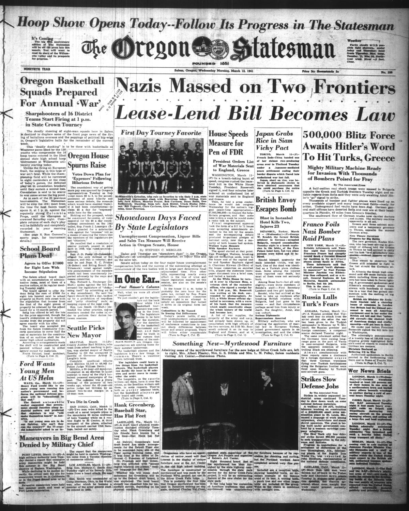
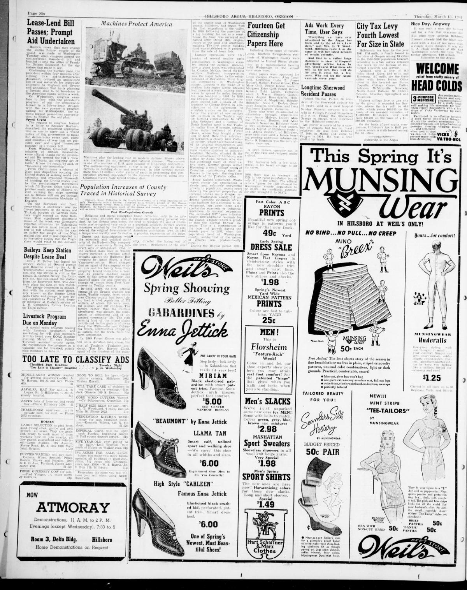

HN HN-525 · March 11, 1941 · Politics, Government & Diplomacy > Legislation & Government Policy > New laws
Source: Decatur Daily Democrat, p. 1 — original page; FDR Presidential Library, Lend-Lease.
Report: The front-page headline said Congress had finished action on the “Lease-Lend†bill, a major change in how the still-neutral United States could supply countries fighting Nazi Germany.
Assessment: President Roosevelt signed the Lend-Lease Act March 11, 1941. Congressional passage, the president's signature, and later disbursement of supplies are separate stages; the new authority did not mean the United States had declared war that day.
Authentic images retrieved from Historic Oregon Newspapers (University of Oregon). Article crops are located using the archive's own OCR word coordinates and rendered at native crop resolution; article clips are assembled from the archive's own article-block images; page scans are reduced-size access renditions. No images were generated, mocked, or retouched.


Not yet acquired. Queued for provider-specific acquisition testing (see source-acquisition manifest).
URL (preserved verbatim): https://newspapers.library.in.gov/?a=d&d=DCDD19410311.1.1
Saved research report: Historical_Newspaper_Event_Research_503-527_2026-10-23.md
Evidence note: A newspaper report means a historical publication made a claim; it does not establish that claim as fact. Contemporary reporting is separated from later scholarly context and our own assessment.